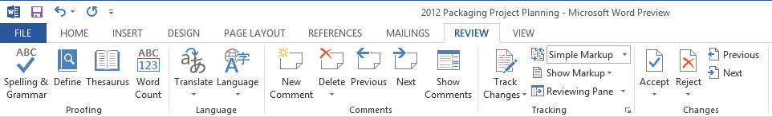
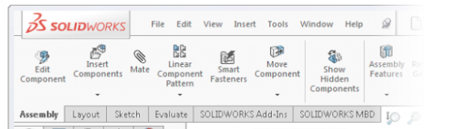

Introduction¶
What is a ribbon widget¶
A ribbon widget is an almost-fixed-sized toobar with PushButtons an ComboBoxes and LineEdit etc..., more-statically organized with more-texts-inside than a classical chaotic set of toolbars.
Goal of ribbon widget is packaging a not-so-big constantly sized zone for user acces actions. Displaying quickly many differents contexts of widgets without overriding and resizing the central-desktop-zone which is (below ribbon) the edited document zone in Word editor, for example.
Currently we see that a ribbon widget is a QTabWiget (from Qt).
By examples:
A classical well-known set of toolbars, (which is not a ribbon):

Another classical well-known set of toolbars, (which is not a ribbon):

A ribbon widget (from Word recent release):
A ribbon widget (from SolidWorks):
Implementation¶
Currently we see that a ribbon widget could be implemented as a inherited class of QTabWidget (from Qt). It is done in this package.
The resulting class RibbonWidget_ could be used in a QMainWindow, included as a QToolBar, or included as a QDockWidget, its as your convenience for simulate desktop SALOME.
The resulting class QMainWindowForRibbon is a inherited class of QMainWindow, for first example of standalone demonstration.